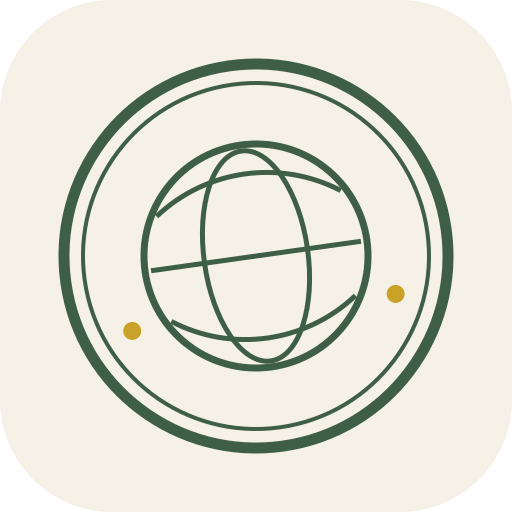
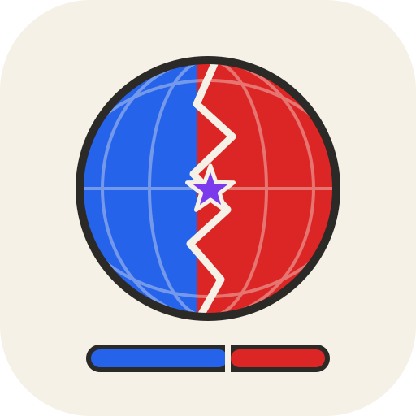
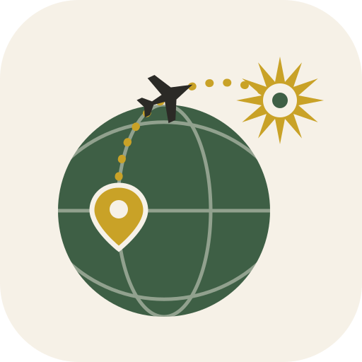
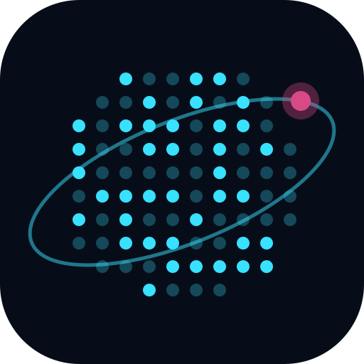
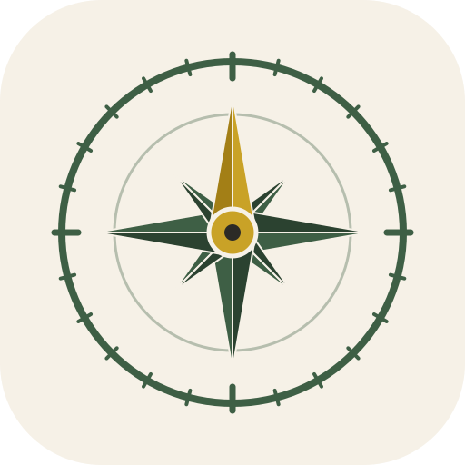
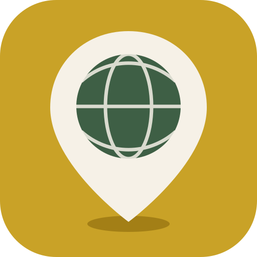
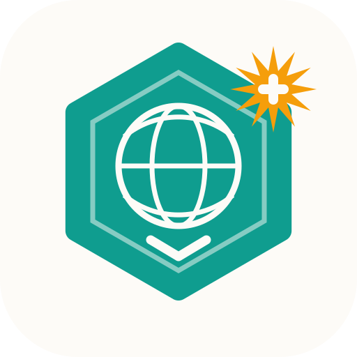
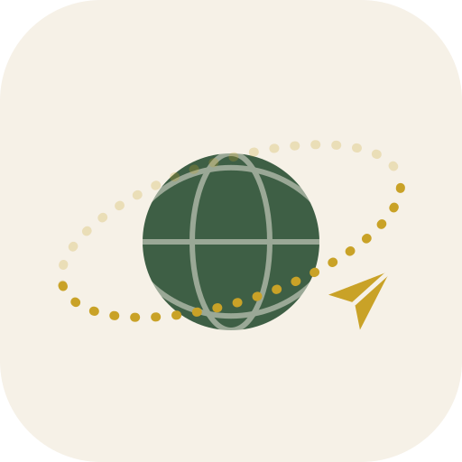

Ten candidate marks to replace the stock Vite favicon and give Traveleria a real identity. Each one is a single SVG that works as the browser favicon, the PWA/app icon, and the mark beside the wordmark. Every concept is built from a feature we actually shipped — the logo should promise the fun, not just decorate it.
Charlie — how to pick: squint at the 16 px row (that's the browser tab), then look at the big tile (that's the home-screen icon). The winner needs to survive both. Comment on the PR with the number you want — or a top three and what you'd change.
The entry stamp every logged country earns you, promoted to brand mark. Tilted like it was actually thumped onto the page. The ring reads TRAVELERIA · 195 NATIONS.

The world split down a jagged front line between you and your rival, contested star on the border, and the battle screen's tug-of-war bar underneath. The most "come fight me" of the ten.

A gold cup whose bowl is the world itself: travel the world, win the world. Nods straight at the bronze→platinum honours system.
Jetstream's tear-off ticket with a big T, perforation and barcode stub. Every country is a ticket to somewhere. Bold travel-game energy in teal and amber.
A dashed great-circle route leaves your home pin and lands in a points burst — the further you fly, the bigger the bang. This is the scoring engine drawn as one picture.

Orbit's glowing mission-control globe. Bright dots are countries you've logged; the pink dot is the next target. The only dark-native mark of the ten — unmissable in a tab row.

The heirloom atlas distilled to one instrument: an engraved eight-point rose with a gold north needle. The most timeless of the set — it'll still look right in ten years.

A map pin whose head is the whole world, on a bold gold field. The simplest and loudest mark here — reads instantly at 16 px, impossible to mistake for anything else.

The game layer as a hexagonal achievement badge: globe, rank chevron, and a points burst pinned to the corner. For the version of Traveleria that's proudly a game.

A paper plane lapping a little world on a dashed orbit. No single feature — this one sells the feeling: going places is one of the best things humans do.
